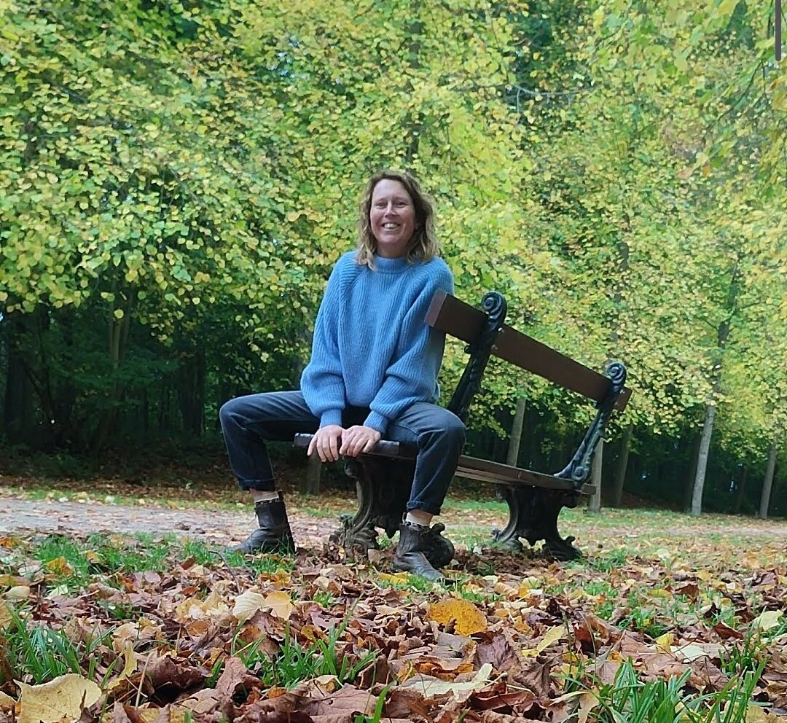
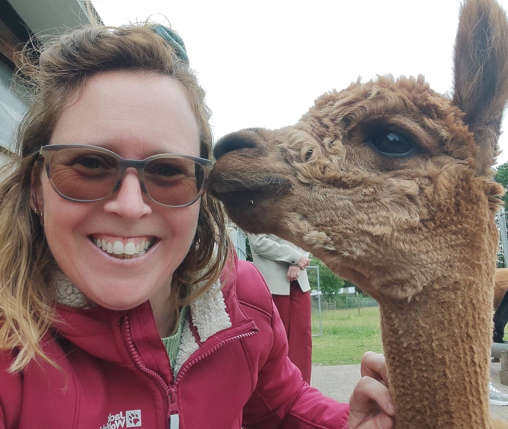
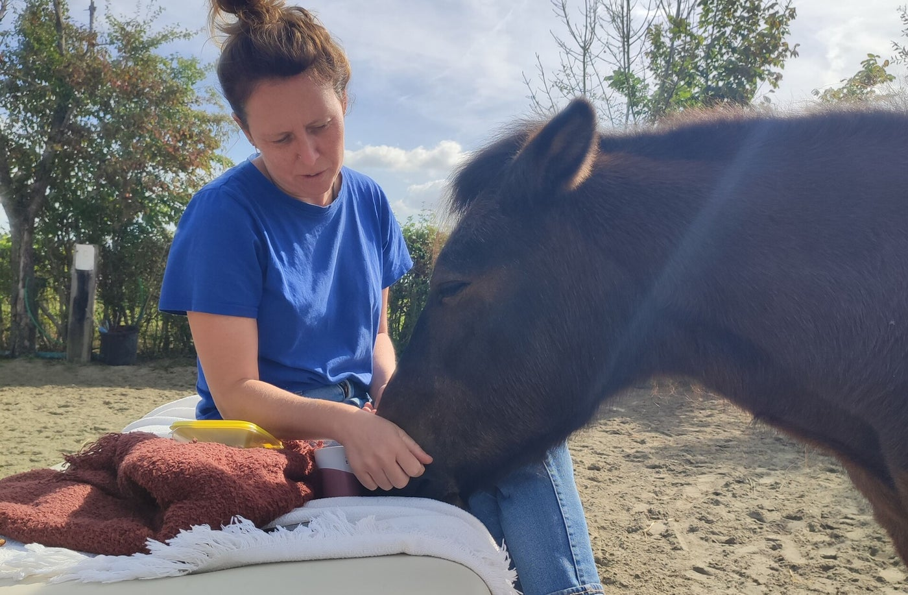
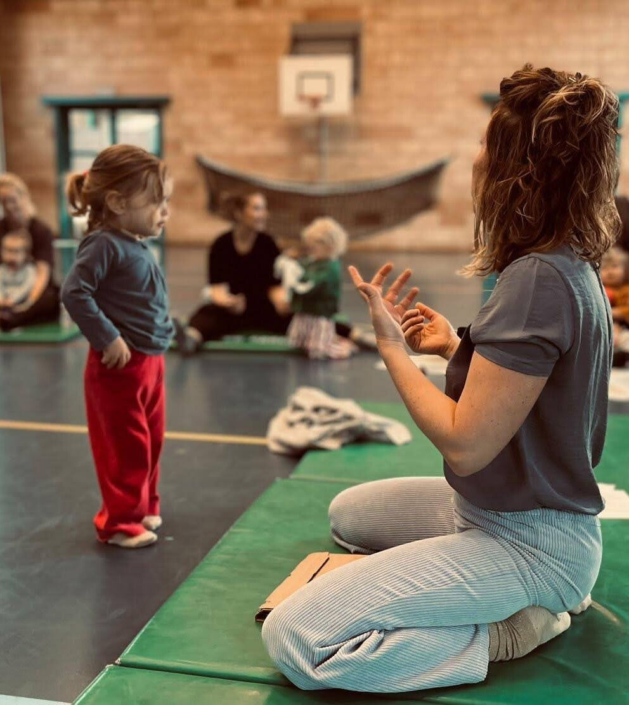
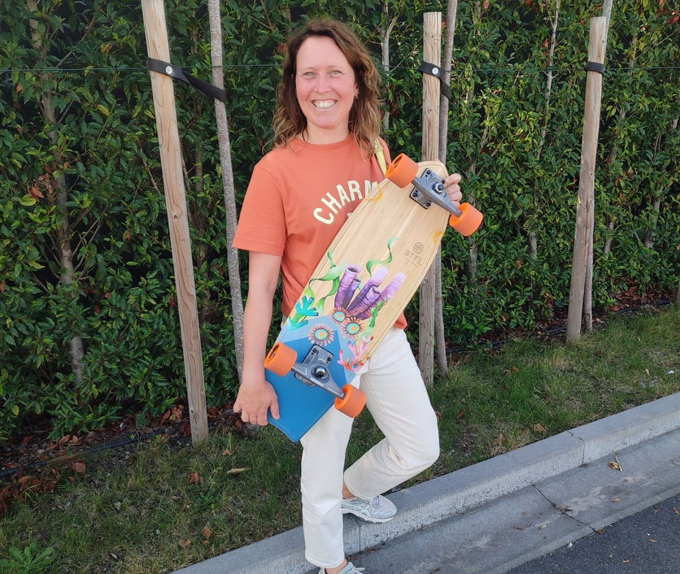
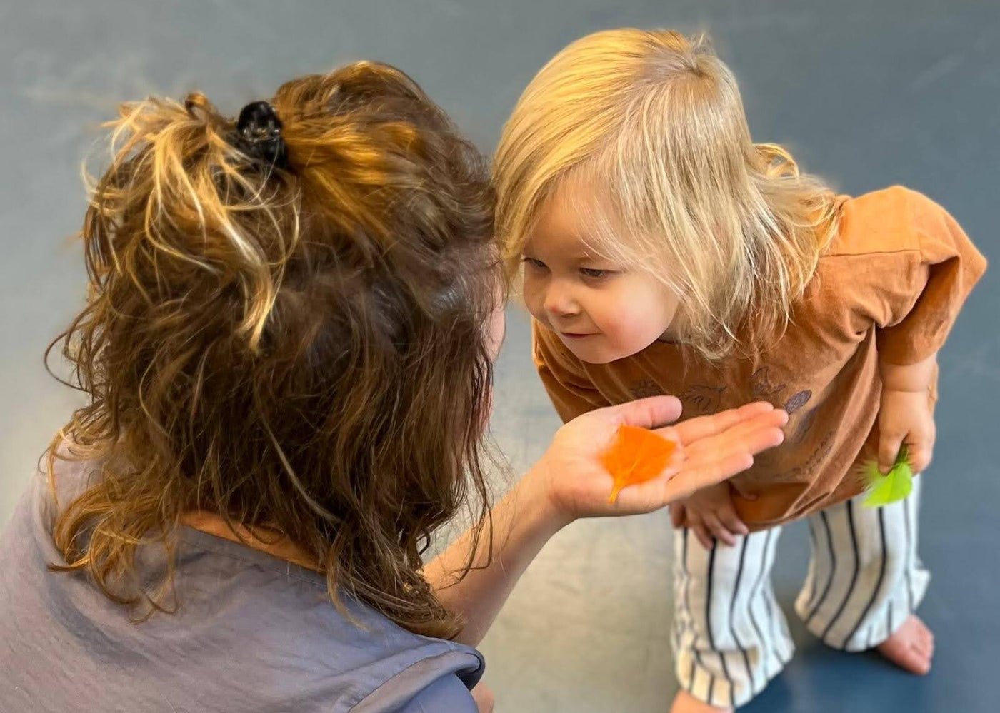

Hey, ik ben Sarah
Eeuwige dromer, speelvogel, gevoelig zieltje en bezielster van Sprankel.
Ik hou van reizen, ben gek op surfskaten en ben helemaal in mijn element tussen de paarden. Ik hou ervan om te bewegen, te spelen en me te laten verwonderen door de kleine en grote dingen in het leven.
Maar ik ben ook iemand die lang veel verantwoordelijkheid heeft gedragen. Iemand die graag voor anderen zorgt, snel aanvoelt waar mensen tegenaan lopen en het fijn vindt om anderen te ondersteunen in hun zoektocht. Doorheen de jaren heb ik ontdekt hoe gemakkelijk je jezelf daarin kunt verliezen. Hoe je soms zo bezig bent met alles wat moet, dat je onderweg vergeet stil te staan bij wat jij zelf nodig hebt.
En precies daar begint mijn verhaal met Sprankel.



Mijn eigen zoektocht naar meer lichtheid
Dertien jaar lang werkte ik met kinderen, jongeren en gezinnen, onder andere als begeleider en dans- en bewegingstherapeut.
Ik ontdekte hoe krachtig beweging kan zijn; hoe je soms meer kunt vertellen met een beweging, een spel of een blik dan met duizend woorden. En hoe waardevol het is wanneer mensen elkaar op een andere manier leren ontmoeten.
Tegelijkertijd werd ik zelf meer dan eens uitgenodigd om stil te staan bij mijn eigen leven. Mijn ervaringen met burn-out hebben me doen beseffen dat rust nemen niet altijd voldoende is om je opnieuw goed te voelen. Ook wanneer je minder doet en de tijd neemt om te herstellen, kun je het contact met jezelf en met wat je vreugde brengt, onderweg een beetje kwijtgeraakt zijn.
Ik merkte dat ik niet alleen nood had aan rust, maar ook aan plezier. Aan bewegen omdat ik daar blij van word.
Aan spelen zonder dat er iets moet worden bereikt.
Aan voelen waar mijn energie van gaat stromen en daar opnieuw ruimte aan geven.
Ik moest opnieuw leren luisteren naar mijn lichaam.: ontdekken wat mij ontspant, wat mij energie geeft en wat echt bij mij past. Niet door nog harder mijn best te doen, maar door mezelf de ruimte te geven om te proberen, te voelen, bij te sturen en opnieuw te ontdekken.
Die zoektocht is nog altijd bezig.
En misschien is dat net wat ik zo mooi vind aan groeien: je hoeft niet alles al te weten. Je mag onderweg ontdekken wat bij je past en je eigen weg blijven vormgeven.
Zo groeide Sprankel
Sprankel is ontstaan vanuit mijn professionele ervaring én mijn persoonlijke zoektocht. Het is een plek waar ik alles wat mij nauw aan het hart ligt, samenbreng: beweging, spel, verbinding, lichaamsbewustzijn en de ruimte om gewoon te mogen zijn.
Ik creëer momenten waarop je even uit de dagelijkse drukte kunt stappen. Momenten waarin je opnieuw kunt voelen wat je nodig hebt, plezier mag maken en verbinding kunt ervaren met jezelf en met de mensen om je heen.
Voor ouders en kinderen betekent dat samen bewegen, spelen, ontdekken en lachen. Ik vind het bijzonder om te zien hoe een ouder en kind elkaar via beweging op een andere manier kunnen ontmoeten. Hoe er tijdens een spelletje, een kleine uitdaging of een moment van nabijheid iets kan ontstaan wat niet in woorden te vatten is.
Voor vrouwen wil ik een plek creëren waar je opnieuw contact kunt maken met je lichaam. Waar je mag vertragen, bewegen, dansen, ontspannen en ontdekken wat jou deugd doet. Zonder verwachtingen waaraan je moet voldoen en zonder dat je iets hoeft te bewijzen.
En Sprankel blijft ook voor mijzelf in beweging. Ik ontdek, probeer nieuwe dingen uit en voel wat klopt. Sommige ideeën groeien verder, andere krijgen een andere plek. Ik zie het als één groot parcours van spelen, bewegen en ontdekken. Want hoe kan ik anderen uitnodigen om te voelen wat bij hen past als ik mezelf niet dezelfde ruimte geef?

Wat mij drijft
Ik heb een grote nieuwsgierigheid naar mensen. Ik luister graag naar wat er onder de oppervlakte leeft en merk vaak snel op waar iemand vastloopt of waar iets wringt. Vanuit mijn ervaring, kennis en eigen zoektocht probeer ik mee te kijken en nieuwe perspectieven aan te reiken.
Niet omdat ik voor jou wil bepalen wat je nodig hebt, maar omdat ik geloof dat er veel kan veranderen wanneer je jezelf beter leert begrijpen. Soms zit de beweging in iets kleins: een andere manier van kijken, een oefening die je helpt om te voelen, een moment waarop je mag lachen of de ontdekking dat je niet altijd harder hoeft te werken om vooruit te komen.
Ik geloof dat verbinding met jezelf niet alleen ontstaat in stilte of rust. Soms vind je die juist door te bewegen, te spelen, iets nieuws uit te proberen of volop te genieten van wat je blij maakt.
"Want de sprankel is niet het vertrekpunt.
De sprankel is wat terugkomt wanneer je opnieuw in verbinding komt met jezelf."
Sarah Cammaert

Dat is wat ik jou met Sprankel graag wil meegeven. Dat je mag ontdekken wat jou energie geeft. Dat er ruimte mag zijn voor rust én plezier, voor voelen én bewegen, voor verantwoordelijkheid én zorgeloosheid.
En dat je, midden in de drukte van het leven, opnieuw momenten mag ervaren waarop je voelt: dit doet mij deugd, dit ben ik, hier mag ik zijn.
Ik wandel graag een stukje met je mee.
Je bent welkom bij Sprankel.
Liefs,
Sarah
Opleidingen en achtergrond
Basisopleidingen
2004–2007 · EHSAL Brussel
Professionele bachelor Orthopedagogie
2008–2010 · Arteveldehogeschool
Banaba Creatieve therapie – dans en beweging, met onder meer Laban, dansexpressie en Authentic Movement

Aanvullende opleidingen & verdieping
Beweging en lichaamswerk
Sherborne Basis · Sherborne Samenspel · Polyvagaal in Danstherapie
Trauma en hechting
NMT Trauma · Hechting
Hoogsensitiviteit en prikkelverwerking
Over- en onderprikkeling bij HSP · Prikkelverwerking bij kinderen (SPNL)
Energetisch en lichaamsgericht werken
Reiki 1 en 2 · Hippotherapie (opleidingsdagen)
Verdere verdieping
NEI 1 – lopende opleiding
Levenslang leren blijft voor mij een natuurlijk onderdeel van het proces. Elke workshop, verdiepingscursus en persoonlijke ervaring weeft mee aan het verhaal van Sprankel.
Volg Sprankel online